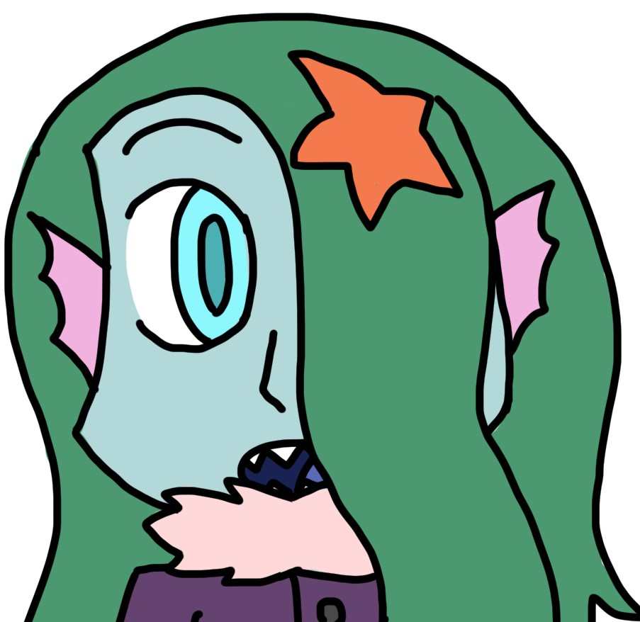

Yourus's story
Yourus lived in a small remote village underwater. On the day he was born there was a massive earthquake that combined with his odd-coloured eyes made the village cleric tell the village he was cursed. Ever since the villagers stayed away from him. Even his own family emotionally distanced themselves from him. So Yourus found himself spending more and more time outside the village. When he was 12 While doing his favorite pass time of shipwreck exploration he found an oil lamp which contained a genie which he made a pact with. They formed a teacher/student relationship, the genie sharing with Yourus his knowledge and Yourus was happy he had some one else to confine in (besides starry of course). When Yourus turned 18 he was banished from the village for his curse. The next two years he spent traveling the surface searching for new experiences and also any information on curses. Though his search in the later category have proven to been rather fruitless. Not even being able to identify what the curse is that affects him. many clerics on the surface and even his genie mentor told him that he is not cursed but he’s in deep denial. After all if he isn’t cursed the villagers had no reason to treat him badly.